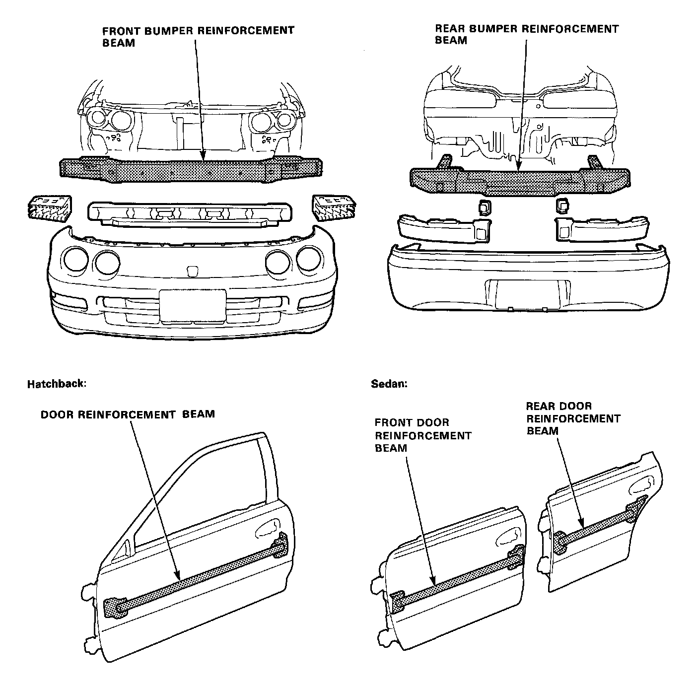

Front Door: Description and Operation
Bumper and Door Reinforcement Beams
Bumper and door reinforcement beams used on Honda automobiles are made from High Strength Steel.
Should High Strength Steel be heated, the strength of the steel will be reduced. If High Strength Steel is damaged, as in a automobile accident where the bumper or door reinforcement beams are bent, the beams may crack should any attempt be made to straighten them.
For this reason, Bumper or Door Reinforcement Beams should never be repaired, they should be replaced if they become damaged.
NOTE: If a door beam is damaged, the whole door panel assembly should be replaced.